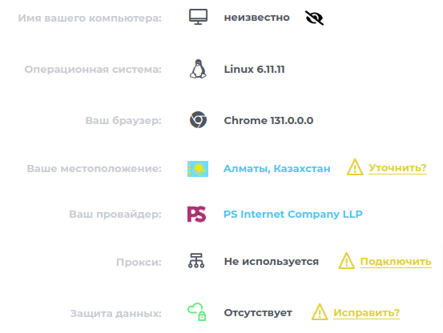

| Ник | Пост | Дата |
|---|---|---|
| User094573(Alexander) | Настроил на своём сервере с помощью 3x-ui подключение vless. Хотелось чтобы было так | 2024-12-27T12:00:27.907Z |
| rewhat | Настроить роутинг на клиенте и на сервере. Т.е например на проксировать все заблокированные сайты, а всё остальное напрямую. У меня на сервере такие правила: СпойлерТ.е сервер принимает любой траффик, кроме торрентов, и ру-сайтов. А на клиенте уже более точечно делаю, чтоб проксировались только заблокированные сайты. В v2RayN например есть уже готовый набор правил для этого. | 2024-12-27T12:07:44.467Z |
| User094573(Alexander) | Спасибо, посмотрю конечно подробнее этот момент. Всё же, может быть я выразился некорректно. В общем, у меня есть несколько vless, shadowsocks подключений, включая моё. | 2024-12-27T12:22:25.208Z |
| Dhohbr | Запросите у хостера удаление или изменение реверсивной днс записи. Обычно это самому можно сделать, через панель управления, если хостер позволяет. | 2024-12-27T12:24:21.772Z |